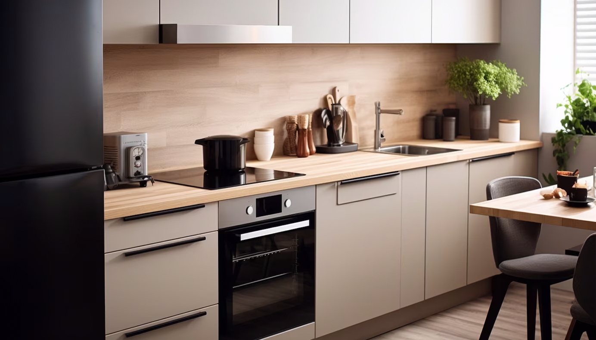
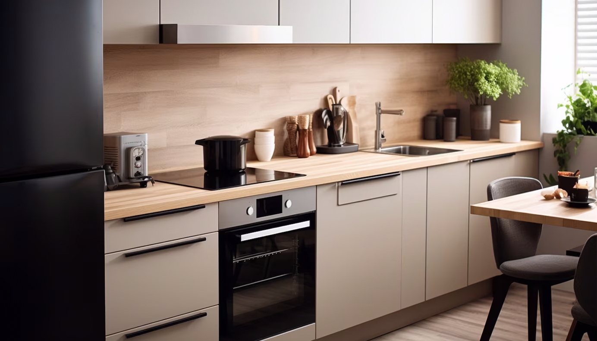

Referencia
Csapatunk több mint 10 év munkatapasztalattal rendelkezik. Asztalos műhelyünk számos elégedett ügyféllel
büszkélkedhet, akiknek otthonaikat egyedi asztalainkkal díszítettük. Az alábbiakban néhány olyan
projektet szeretnénk bemutatni, amelyek során kreativitásunk és szakértelmünk összetalálkozott,
létrehozva olyan bútorokat, amelyek a várakozásokat felülmúlták.
Üzletünk büszkén szolgálja azokat, akik minőségi, egyedi asztalokra vágynak. Tapasztalt csapatunk
elkötelezett abban, hogy elképzeléseit valóra váltsuk, és otthonába olyan egyedi bútorokat tervezzünk és
készítsünk, amelyek kifejezik az Ön stílusát.
 
